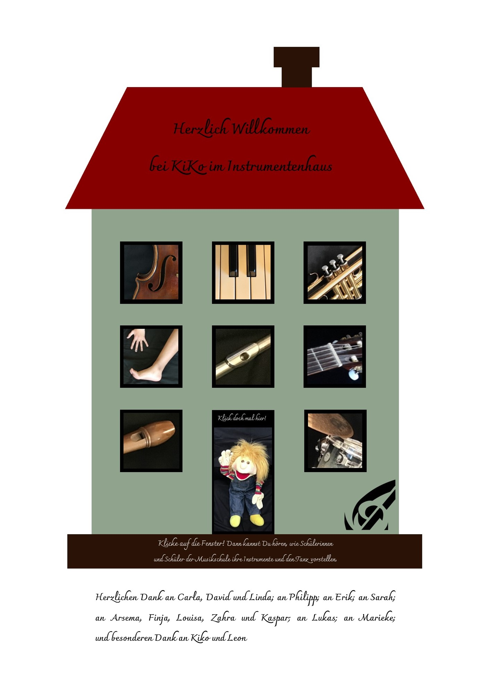

<map name="youtube">
  <area alt="Geige" title="Geige" href="https://www.youtube.com/watch?v=RJGWfzYfxRY" coords="338,697,530,870" shape="rect">
  <area alt="Klavier" title="Klavier" href="https://www.youtube.com/watch?v=yLn7A09Lhrw&feature=youtu.be" coords="614,694,787,861" shape="rect">
  <area alt="Trompete" title="Trompete" href="" coords="872,694,1055,876" shape="rect">
  <area alt="Arm und Bein" title="Hand und Fuß" href="" coords="346,935,525,1112" shape="rect">
  <area alt="Querflöte" title="Querflöte" href="" coords="610,933,794,1118" shape="rect">
  <area alt="Gitarre" title="Gitarre" href="" coords="872,929,1043,1108" shape="rect">
  <area alt="Flöte" title="" href="Flöte" coords="348,1175,532,1361" shape="rect">
  <area alt="KiKo Männchen" title="KiKo Männchen" href="" coords="610,1178,783,1519" shape="rect">
  <area alt="Schlagzeug" title="Schlagzeug" href="" coords="880,1182,1053,1355" shape="rect">
</map>
